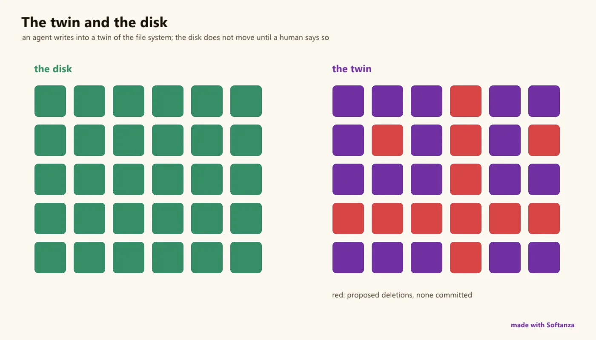

System programming
A governed-effects surface, not a Go or Rust standard-library clone: rehearse then commit; an LLM cannot act by construction.
1 Strong · 7 Solid · 3 Partial · 1 Emerging
Measured against: Go/Rust std · libuv · Folders: base/system · base/platform · The guide to this area's functions

Rethought from first principles
What Softanza kept from what works, and what it rethought, as the library wrote it down in its design documents and narrations.
The Softanza wayOnly the engine touches the real system; everything above it is a view or a rehearsal, and reality changes only when a governed plan crosses the one door.
Kept from the best practice
- Direct action stays available: the real file, folder and process classes still act at once. Rehearsal is the recommended path for consequential change, not a forced one. source
- Child processes are managed the usual way: spawn, stream the output, wait, read the exit code, stop. Closing a handle stops a running child, so nothing leaks. source
- Building for another machine reuses Zig's cross-compiler: a deployment target's operating system and processor are simply the build triple. source
Rethought
- Rehearse, plan, commit. Changes are tried in an in-memory twin that holds no reference to reality; an update plan is the only way they reach the real system. source
- Imagining a change and enacting it are separate powers. A language-model actor holds no power to act, so it can propose a plan but never commit one. source
- System code is written in a named scope: development, deployment or runtime. Code for a phone is checked against the phone, and a forbidden act is refused at write time. source
- The twin also stands in for a machine you do not have: a microcontroller's pins are rehearsed on a laptop, then lowered to firmware source for the real device. source
Deliberately not a Go/Rust-std system library: a clean but intentional subset of OS primitives, plus a layer none of them have -- an in-memory rehearsal twin over files, env and spawns, a single narrated/scoped/audited stzUpdatePlan that is the only bridge to reality, and a capability-actor lattice where an inference-only (LLM) actor's effect set is empty by construction. It omits by design what a governed-effects surface doesn't need: signals, broad IPC, the raw syscall zoo.
What a maker does with it, and what stands out
- A rehearsal twin over files, env and spawns that touches nothing
- stzUpdatePlan: the sole crossing to reality, through three gates (reject, scope, governance)
- An inference-only (LLM) actor's effect set is empty by construction -- agents that cannot hurt you
- Deploy(:Production) gated by MayCommit; Git and LocalRepo backends proven byte-for-byte
What is owed
- Signal handling (SIGINT/SIGTERM/SIGCHLD and Windows console-control)
- The full async reactor surface
- Complete the process face (ExePath, IsAlive, process table); live-verify ssh/docker/device deploy backends
- Richer IPC and the lower OS surface (permissions, symlinks, users/groups); wire the engine sandbox flag
The Softanza way, run
What Softanza does differently in this area, shown by code taken from its narrations and guards, and run for this page.
File changes are rehearsed in an in-memory twin and come out as a plain-language plan; nothing on disk changes until the plan is committed.
oVfs = new stzVirtualFileSystem()
oVfs.CreateFolder("config")
oVfs.CreateFile("config/greenhouse.ini", "pump_threshold=40")
oVfs.MoveFile("old_settings.txt", "config/legacy.ini")
oPlan = oVfs.GenerateUpdatePlan()
? oPlan.Narration()Update plan (3 of 3 operations to commit): * 1. create folder 'config' * 2. create file 'config/greenhouse.ini' (17 bytes) * 3. move 'old_settings.txt' -> 'config/legacy.ini'
run on 2026-10-01 21:18 inside the library at commit 0e72e2e2c; taken from base/doc/narrations/stz-system-dev-to-deploy-narration.md
The lanes, one by one
Lanes and their notes are quoted as they were read at the source, on Read from the source on 2026-09-16, from a read-only main worktree.